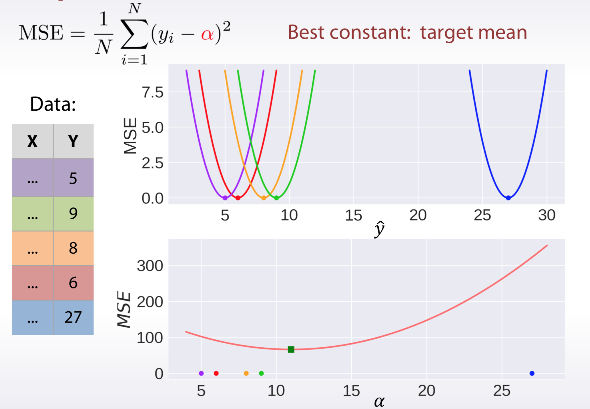
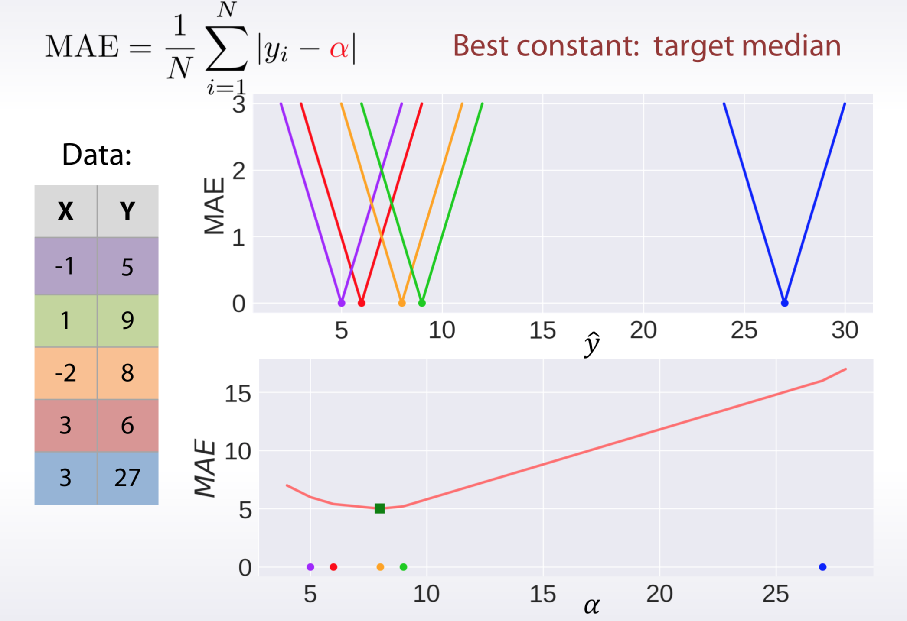
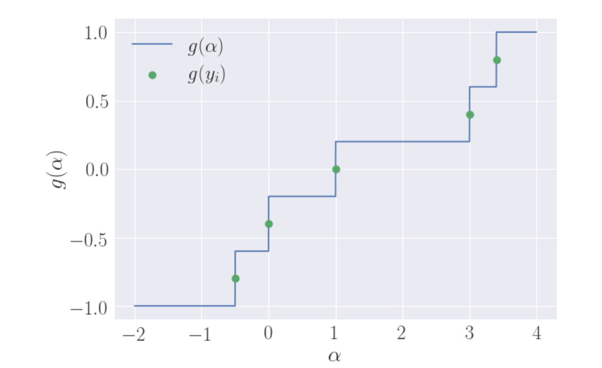
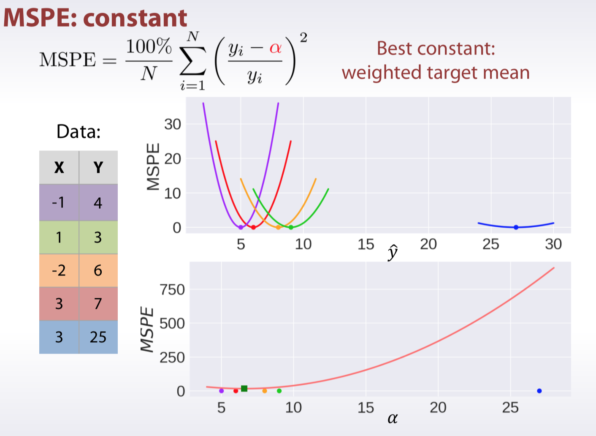
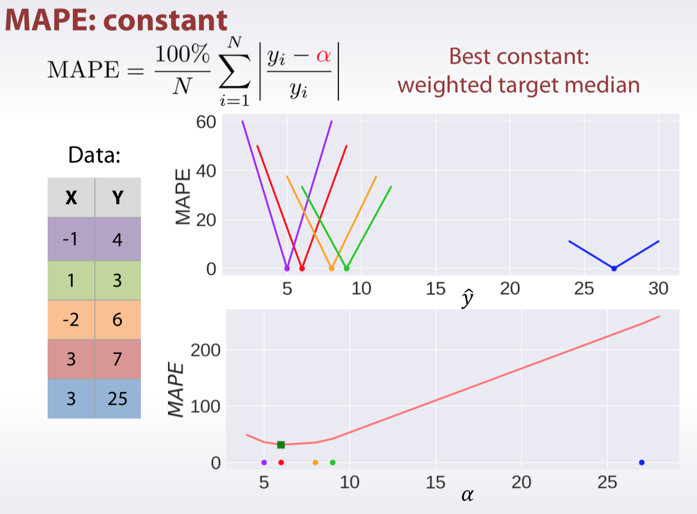
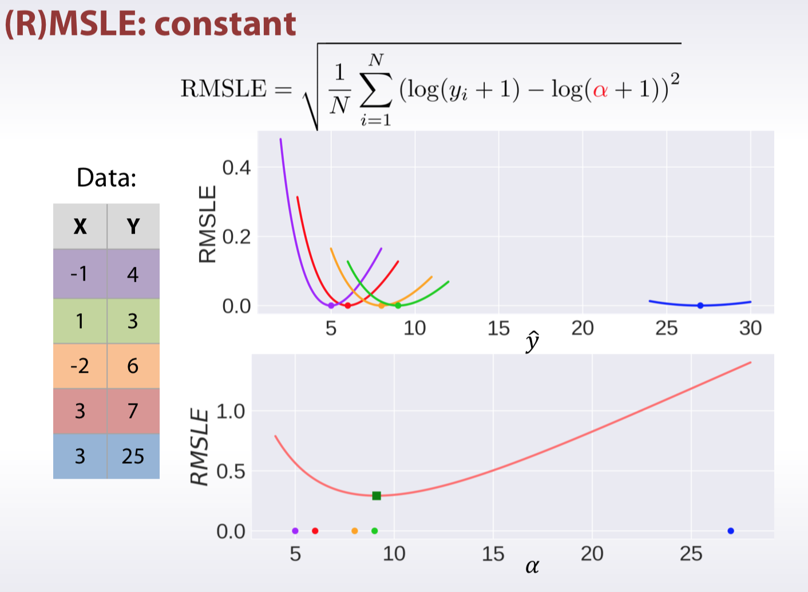
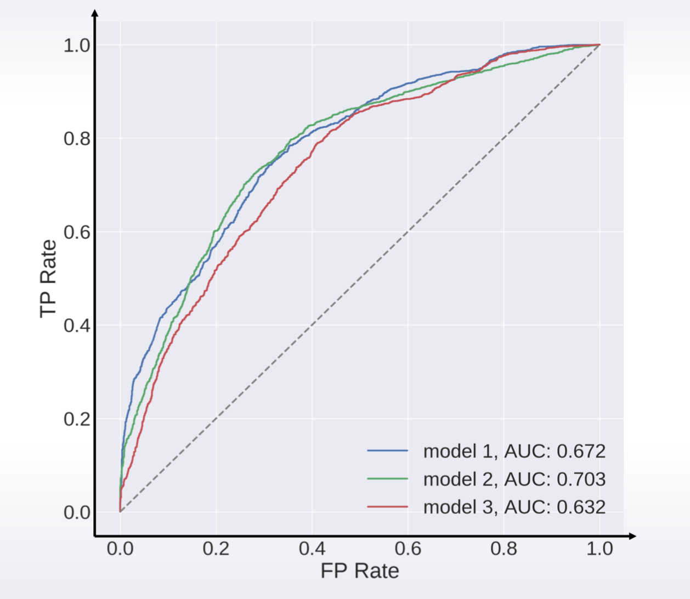
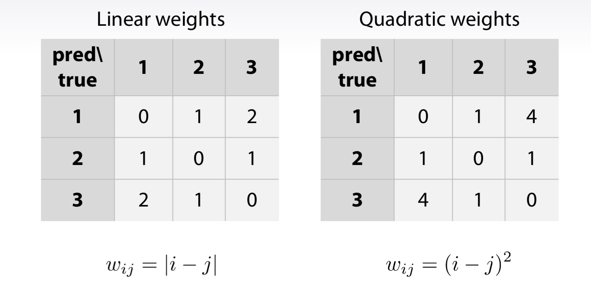
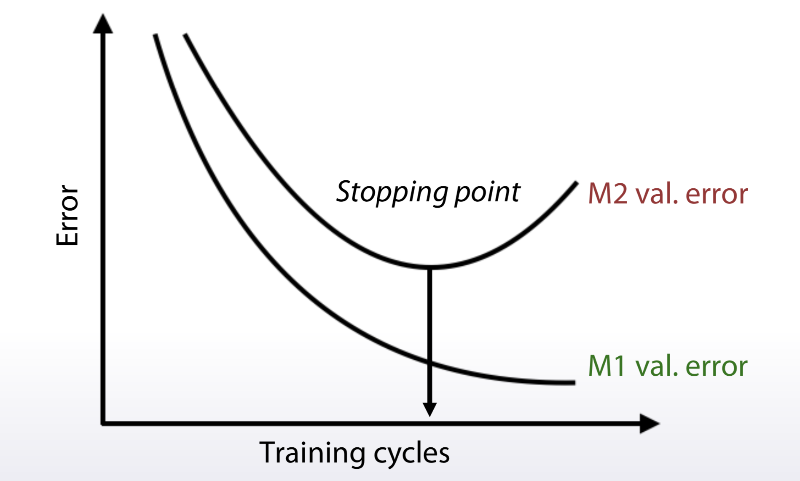

Overview
- Why there are so many metrics?
– Different metrics for different problems - Why should we care about metric in competitions?
– It is how the competitors are ranked!
Regression
Why target mean value minimizes MSE error and why target median minimizes MAE.
Suppose we have a dataset
Basically, we are given pairs: features $x_i$ and corresponding target value $y_i \in \mathbb{R}$.
We will denote vector of targets as $y \in \mathbb{R}^N$, such that $y_i$ is target for object $x_i$. Similarly, $\hat y \in \mathbb{R}$ denotes predictions for the objects: $\hat y_i$ for object $x_i$.
first-order derivative and second-order derivative
设$f(x)$在$[a,b]$上连续，在$(a,b)$内具有一阶和二阶导数，那么:
- 若在（a,b)内f’’(x)>0,则f(x)在[a,b]上的图形是凹的；
- 若在（a,b)内f’‘(x)<0,则f(x)在[a,b]上的图形是凸的。
结合一阶、二阶导数可以求函数的极值。
- 当一阶导数等于0，而二阶导数大于0时，为极小值点；
- 当一阶导数等于0，而二阶导数小于0时，为极大值点；
- 当一阶导数和二阶导数都等于0时，为驻点。
MSE

Let’s start with MSE loss. It is defined as follows:
Now, the question is: if predictions for all the objects were the same and equal to $\alpha$: $\hat y_i = \alpha$, what value of $\alpha$ would minimize MSE error?
The function $f(\alpha)$, that we want to minimize is smooth with respect to $\alpha$. A required condition for $\alpha^*$ to be a local optima is
Let’s find the points, that satisfy the condition:
And finally:
Since second derivative $\frac{d^2 f}{d \alpha^2}$ is positive at point $\alpha^*$, then what we found is local minima.
So, that is how it is possible to find, that optial constant for MSE metric is target mean value.
MAE

Similarly to the way we found optimal constant for MSE loss, we can find it for MAE.
Recall that $ \frac{\partial |x|}{dx} = sign(x)$, where $sign$ stands for signum function . Thus
So we need to find such $\alpha^*$ that
Note that $g(\alpha^*)$ is piecewise-constant non-decreasing function. $g(\alpha^*)=-1$ for all calues of $\alpha$ less then mimimum $y_i$ and $g(\alpha^*)=1$ for $\alpha > \max_i y_i$. The function “jumps” by $\frac{2}{N}$ at every point $y_i$. Here is an example, how this function looks like for $y = [-0.5, 0, 1, 3, 3.4]$:

Basically there are $N$ jumps of the same size, starting from $-1$ and ending at $1$. It is clear, that you need to do about $\frac{N}{2}$ jumps to hit zero. And that happens exactly at median value of the target vector $g(median(y))=0$. We should be careful and separate two cases: when there are even number of points and odd, but the intuition remains the same.
MSPE, MAPE, MSLE



Classification
Accuracy
Best constant: predict the most frequent class.
Logarithmic loss
- Binary:
- Multiclass:
- Logloss strongly penalizes completely wrong answers
- Best constant: set $\alpha_{i}$ to frequency of $i-th$ class.
Area under ROC curve

1 | from sklearn import metrics |
- TP: true positives
- FP: false positives
- Best constant: All constants give same score
- Random predictions lead to AUC = 0.5
Kappa
Cohen’s Kappa motivation
- $p_e$: what accuracy would be on average, if we randomly permute our predictions
Weighted Kappa
dataset:
- 10 cats
- 90 dogs
- tigers
- Error weight matrix W
| pred/true | cat | dog | tiger |
|---|---|---|---|
| cat | 0 | 1 | 10 |
| dog | 1 | 0 | 10 |
| tiger | 1 | 1 | 0 |
you can define this by youself
- Confision matrix C
| pred/true | cat | dog | tiger |
|---|---|---|---|
| cat | 4 | 2 | 3 |
| dog | 2 | 88 | 5 |
| tiger | 4 | 10 | 12 |
weighted error
weighted Kappa
Quadratic and Linear Weighted Kappa
if the target is orderd label, the weighted martix can simply get by follows:
1 | def soft_kappa_grad_hess(y, p): |
General approaches for metrics optimization
- Target metric is what we want to optimize
- Optimization loss is what model optimizes
The approaches can be broadly divided into several categories, depending on the metric we need to optimize. Some metrics can be optimized directly.
Approaches in general:
- Just run the right model(given the metric we need to optimize)
- MSE, Logloss
- Preprocess train and optimize another metric
- MSPE, MAPE, RMSLE, …
- Optimize another metric,postprocess predictions
- Accuracy, Kappa
- Write a custom loss function
- Any, if you can
- Optimize another metric,use early stopping

Regression metrics optimization
- MSE and MAE
just find the right model
- MSPE and MAPE
- Use weights for samples (
sample_weights)- And use MSE (MAE)
- Not every library accepts sample weights
- XGBoost,LightGBMaccept
- Easy to implement if not supported
- Resample the train set
- df.sample(weights=sample_weights)
- And use any model that optimizes MSE (MAE)
- Use weights for samples (
- (R)MSLE
- Transform target for the train set:
- Fit a model with MSE loss:
- Transform predictions back:
- AUC
| ID | LABEL | TARGET |
|---|---|---|
| A | 0 | 0.1 |
| B | 0 | 0.4 |
| C | 1 | 0.35 |
| D | 1 | 0.8 |
假设有4条样本。2个正样本，2个负样本，那么M*N=4。即总共有4个样本对。分别是：（D,B）,（D,A）,(C,B),（C,A）。在（D,B）样本对中，正样本D预测的概率大于负样本B预测的概率（也就是D的得分比B高），记为1。同理，对于（C,B）。正样本C预测的概率小于负样本C预测的概率，记为0. 最后可以算得，总共有3个符合正样本得分高于负样本得分，故最后的AUC为:
- Pointwise loss
- Logloss
- Quadratic weighted Kappa
- Optimize MSE
- Find right thresholds
– Bad:np.round(predictions)
− Better: optimize thresholds
Probability Calibration
- logistic regression，在拟合参数的时候采用的是“最大似然法”来直接优化log-loss,因此，logistic function本身返回的就是经过校验的probability。
- Guassian_NaiveBayes，其应用有个前提假设：所有的特征向量是相互独立的。而在实际的工作中，特征向量集难免有冗余，彼此相关，因此利用Guassian_NaiveBayes拟合模型时，往往会over-confidence，所得probability多倾向于0或1。
- RandomForest，与Guassian_NaiveBayes正好相反，由于其分类要旨是取所有分类器的平均，或采用服从多数的策略，因此，RandomForest往往会under-confidence，所得probability多在(0，1)之间。
- SupportVector，由于受到hard margin的影响，其预测probability多集中在(0，1)之间，与RandomForest相似，为under-confidence的情况。
为了解决上述模型的over-confidence，或under-confidence的情况，我们可以用“概率校验”来对prediction label进行概率估计。
- non-parameter isotonic regression：isotonic calibration is preferable for non-sigmoid calibration curves and in situations where large amounts of data are available for calibration.
- Just fit Isotonic Regression to your predictions(like in stacking)
- Platt’s scaling（sigmoid function）: sigmoid calibration is preferable in cases where the calibration curve is sigmoid and where there is limited calibration data.
- JustfitLogisticRegressiontoyourpredictions(like in stacking)
- Stacking
− Just fit XGBoost or neural net to your predictions
概率校验的操作方法如下：
- 将dataset分为train和test（可用cross_validation.train_test_split）。
- 用test去拟合校验概率模型；
- 用train去拟合机器学习模型；
- 将校验概率模型应用于已经拟合好的机器学习模型上。对机器学习模型的prediction结果进行调整。
1
2
3
4
5
6
7
8
9
10
11
12
13
14
15
16
17
18
19
20
21
22
23
24
25
26
27
28
29
30
31
32# sklearn中的实现：sklearn.calibration.CalibratedClassifierCV
# 主要参数：
# base_estimator ：初始分类函数
# method ：校准采用的方法。取值‘sigmoid’ 或者 ‘isotonic’
# cv ：交叉验证的折叠次数。
# Gaussian Naive-Bayes with no calibration
clf = GaussianNB()
clf.fit(X_train, y_train) # GaussianNB itself does not support sample-weights
prob_pos_clf = clf.predict_proba(X_test)[:, 1]
# Gaussian Naive-Bayes with isotonic calibration
clf_isotonic = CalibratedClassifierCV(clf, cv=2, method='isotonic')
clf_isotonic.fit(X_train, y_train, sw_train)
prob_pos_isotonic = clf_isotonic.predict_proba(X_test)[:, 1]
# Gaussian Naive-Bayes with sigmoid calibration
clf_sigmoid = CalibratedClassifierCV(clf, cv=2, method='sigmoid')
clf_sigmoid.fit(X_train, y_train, sw_train)
prob_pos_sigmoid = clf_sigmoid.predict_proba(X_test)[:, 1]
print("Brier scores: (the smaller the better)")
clf_score = brier_score_loss(y_test, prob_pos_clf, sw_test)
print("No calibration: %1.3f" % clf_score)
clf_isotonic_score = brier_score_loss(y_test, prob_pos_isotonic, sw_test)
print("With isotonic calibration: %1.3f" % clf_isotonic_score)
clf_sigmoid_score = brier_score_loss(y_test, prob_pos_sigmoid, sw_test)
print("With sigmoid calibration: %1.3f" % clf_sigmoid_score)